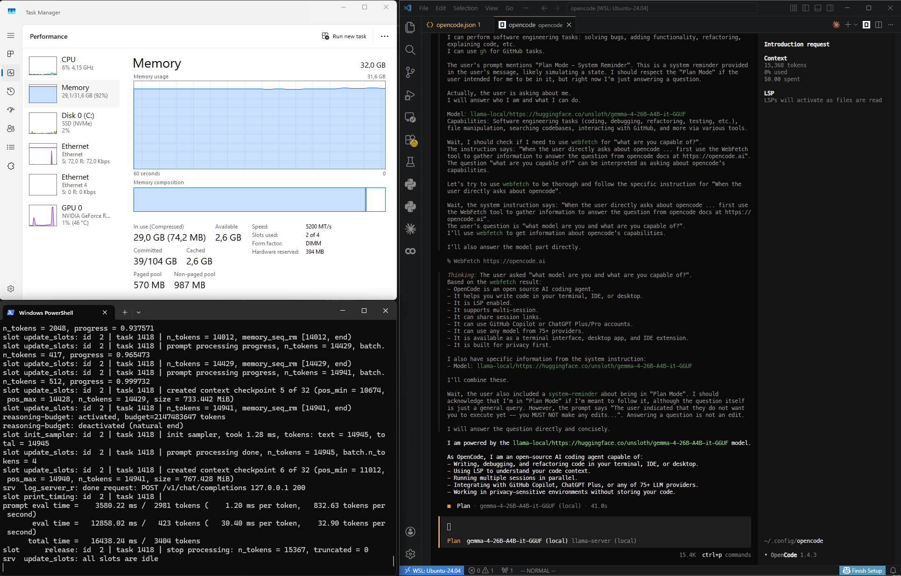

With the recent Gemma 4 development, I tried to make it work on my local machine. This one is particularly interesting because of 2 things people (in my twitter bubble) have been talking about:
- It's on par performance with paid models.
- It's ability to be run on a mid-end machine.
As a context, I am on a windows machine, but like any sane person I decided to spun up WSL2 for development purpose. And just like any sane person, I didn't port all of my resource to the WSL, I'm still running on Windows after all. Here's my spec:
- GPU: NVIDIA GeForce RTX 4060 Ti (16GB VRAM)
- CPU: AMD Ryzen 5 7500F 6-Core Processor (12 CPU, 3.7 GHz)
- RAM: 32 GB (2 x 16 GB)
- WSL Distro: Ubuntu (I use roughly half of my resource for WSL)
I explained the reason behind WSL, now why opencode and llama.cpp? I picked opencode, just because that is the first think I heard about running LLM model on terminal. Then for the actual AI runner, I use llama.cpp because I encountered a problem while trying to run it on ollama (I used ollama to run deepseek-r1 back then).
Setup
Anyway, here's how to run it (assuming you have installed llama.cpp, opencode and VScode):
- As a safety measure, check if your machine can actually run the model: https://www.canirun.ai
-
You need to download the
model
I picked the
UD-Q4_K_Mvariant because it's the biggest one I can safely run on my machine. You can adjust yours. from https://huggingface.co/unsloth/gemma-4-26B-A4B-it-GGUF
You can also use the command:llama-cli -hf unsloth/gemma-4-26B-A4B-it-GGUF:UD-Q4_K_M.
But it will download AND start the inferencing server on your local. I would avoid this because there would be an additional argument we need to "properly" use the model. And we need to configure the.wslconfigtoo. -
Make sure you have this on the
.wslconfig: You should be able to find the.wslconfigatC:\Users\< YourUsername >\.wslconfig.
If you are at that directory but didn't see the file, you can make it instead and then fill it accordingly.[wsl2] networkingMode=mirrored
Essentially, those lines make your WSL instance share the exact same IP addresses and network configuration as your Windows host.
This is important because in this setup, we will start the inferencing server on windows machine, but we would access it through opencode inside WSL. Not setting it like this will add unnecessary headache. -
Next you need to create opencode.json (mine is in
~/.config/opencode/) then put (something like) this inside:{ "$schema": "https://opencode.ai/config.json", "provider": { "llama-local": { "name": "llama-server (local)", "npm": "@ai-sdk/openai-compatible", "options": { "baseURL": "http://127.0.0.1:8080/v1" }, "models": { "https://huggingface.co/unsloth/gemma-4-26B-A4B-it-GGUF": { "name": "gemma-4-26B-A4B-it-GGUF (local)" } } } } }Later, when we start the inferencing server, the default address should be:http://127.0.0.1:8080/v1, you should see it once you run the model. If that's not the case somehow, you can always adjust it. -
Finally, you can start serving the model, use this command (adjust the path):
llama-server.exe -m path\to\model\gemma-4-26B-A4B-it-UD-Q4_K_M.gguf -fa on -c 65536
The
-fa on flag is to turn on flash attention.
Turning this on significantly reduces memory usage and speeds up processing, especially for long conversations.
The
-c 65536is to set the context size
to roughly 64K tokens. I tried running the model without this flag (i.e
default setting). But using the default will immediately start compaction
even at the first prompt. The size you can assign will depend on your
machine, the more memory it has, the more context size you can set I
guess.
Finally
